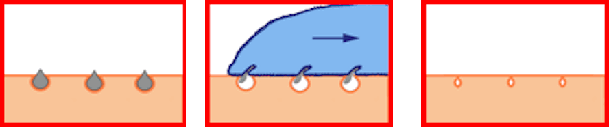
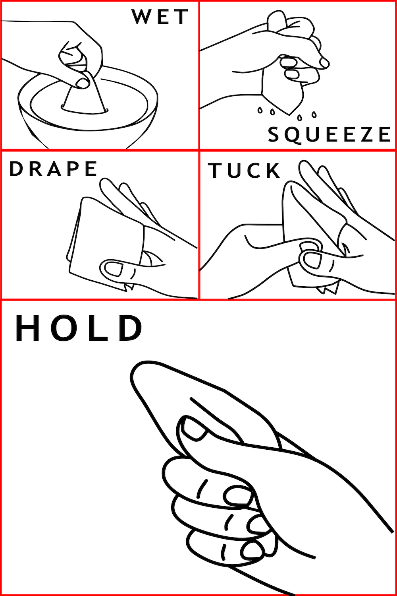
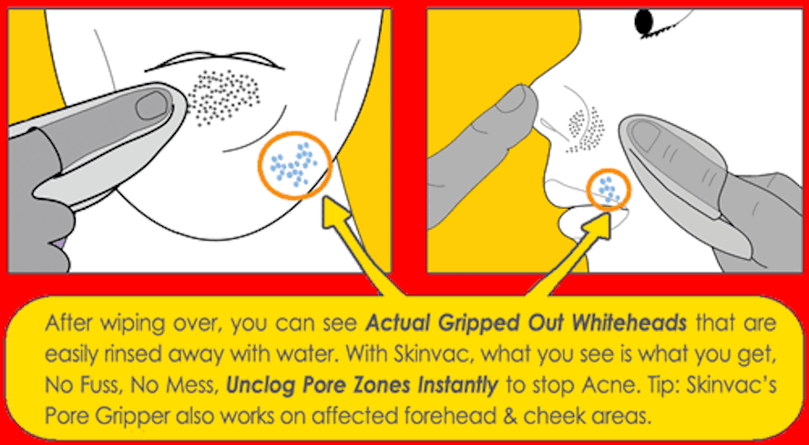

Home / Pore Gripper for Acne
Fact: Acne is caused by infected clogged pores on your skin. Clear Skin comes from clear pores. Skinvac’s Pore Gripper Cloth is textured to grip out surface whiteheads, unclogging pores instantly. Pore Gripper attacks the Cause of Acne by removing whiteheads Before they can turn into Acne or Blackheads. No Clogged Pores means No Acne, It's that simple!

✔️ No sticky residue
✔️ No drying time
✔️ No adhesive
✔️ Easy to use, flexible and contours to your skin
✔️ Reusable, so if you don't get it right the first time round, you don't waste it.
Great for awkward T-zones, no squeezing or popping. Watch and see for yourself, Skinvac's Pore Gripper Grips away whiteheads instantly! Check out these bumpy whiteheads sticking out of the pores on the face, especially in the oily t-zones like the sides of the nose and chin area.
Skinvac Instantly Unclogs pores by gripping out, the whiteheads that stick out, in the hard to squeeze nose area. Clogged pores on the nose are harder to remove because it's awkward and soft. With Skinvac's pore Gripper, there is no need to spend hours in front of a mirror popping or squeezing every single whitehead one by one and leaving red marks!
Skinvac INSTANTLY UNCLOGS the whole whitehead zone from the pores on your chin in seconds! No need to pick at it! You can even see the gripped out whiteheads left on the chin, these are easily rinsed off. How long did it take? just seconds.
Wet with water & squeeze out the excess water. Use a mirror with good lighting to find the clogged pores white whiteheads that stick out, then watch your whiteheads gripped out instantly. Use Skinvac Pore Gripper for the affected areas only. It is not to be used more than once every 3 days.
For clogged pores on the Chin Area: Close Lips tightly & push out chin area to make whiteheads stick out, gently wipe over & see them gripped out!
For clogged pores on the Sides of the Nose: Gently push tip of nose aside to make whiteheads stick out, gently wipe over & watch as they are gripped out!
Hand or machine wash thoroughly after each use. Do not use fabric conditioner, do not tumble dry or iron. Keep your Skinvac Pore Gripper clean and dry when not in use.
A: Pore Gripper does not need a whole range of Acne products to work, it unclogs pores physically without chemicals, so you only pay for what works!
A: Pore Gripper is effective up to 100 uses.
A: No, Pore Gripper is designed for and best used for clogged pores in oily areas like your T-zone, use Pore Gripper no more than once every 3 days.
A: Apply a warm towel to the area for a few minutes to relax the pores, then gently stretch the skin around the clogged pore area until the whiteheads stick out and wipe them away with Pore Gripper.
No, Pore Gripper only works for protruding whiteheads, it needs physical contact to grip them out.
A: You can use Pore Gripper in addition to your existing routine.